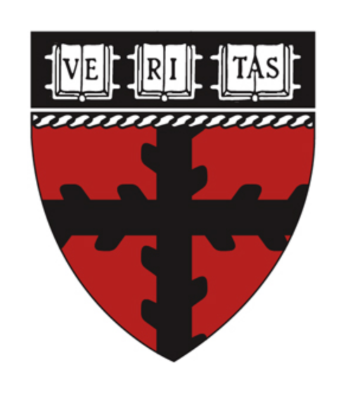
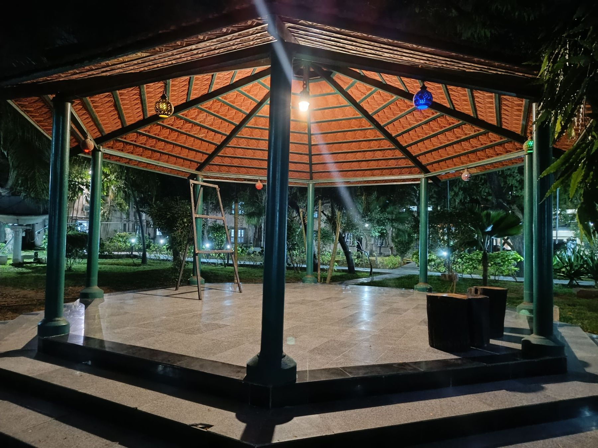
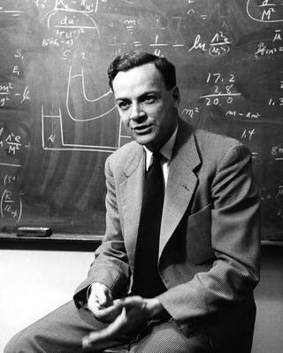
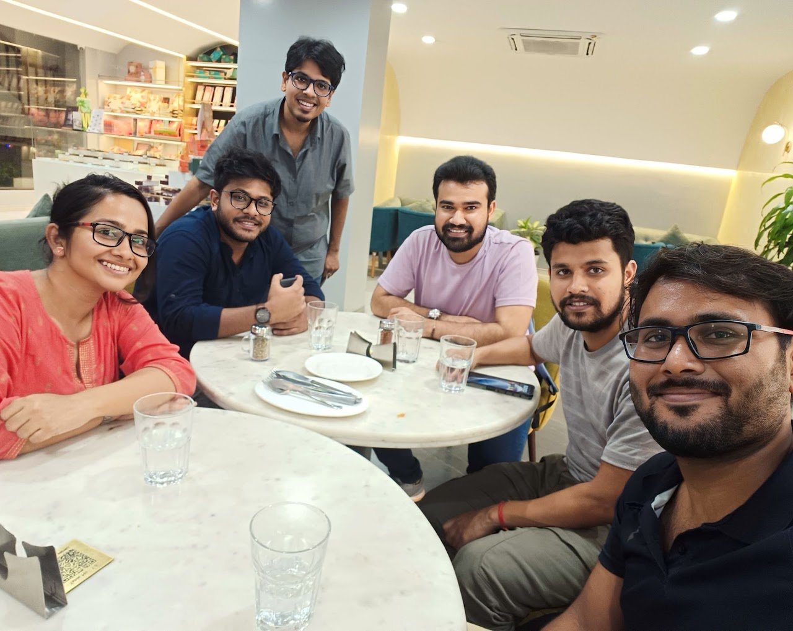
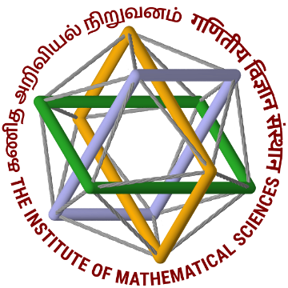
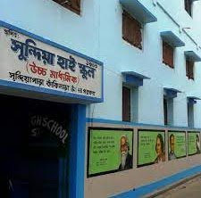

2025 – present
Postdoctoral researcher

Thanks a lot for taking the time to have a look at my website. Currently, I am a research associate at Harvard University, USA, in the group of Prof. L. Mahadevan. Before this, I did my PhD with Prof. Arnab Pal at The Institute of Mathematical Sciences, India, working on many aspects of stochastic resetting. My broad research interest lies in non-equilibrium statistical physics. Though it is not that I have many things under my belt to display, I could not resist the temptation to see what my own personal website would look like. Please take a tour.

Every process we can imagine is random on a certain timescale.
— from my Research Activities pageAbove: 220 trajectories on the Lorenz attractor. They start almost at the same point and quickly go their separate ways, a hallmark of chaos in non-linear dynamics.
I was an ordinary person who studied hard— Richard Feynman
Whenever I felt down, this line by Feynman acted like the ultimate medicine for me.

Mathematics was the first thing that drew me towards science. I had planned to do honours in it, until I started to appreciate its beauty in the applications of Physics. Now I feel lucky to have made Physics a part of my life. I greatly enjoy learning basic science and solving Physics problems, both analytically and numerically.
My mother and father are an integral part of my journey. I especially credit my Maa (mother) for making me the person I am today.
(I also learnt the basics of C, but did not use it much afterwards ;))
Above: six random walkers, each sent back to its starting point x₀ (dashed line) at a constant rate. The sudden jumps back to the dashed line are resetting events.
For publications, please see my Google Scholar profile. Other platforms: LinkedIn, ORCID.
This is best explained by Obama in the video on the right (below, on a phone). Simply put, it is a random process. There are plenty of stochastic processes that we encounter in our day-to-day life. For instance, when you are searching randomly for a lost smartphone or key, tossing a coin to decide who will go first, kicking the football randomly without seeing if there is anyone to receive it, etc.
I believe every process we can imagine is random on a certain timescale. For example, you go to lunch at 1 P.M. every day. But if you ask at exactly which minute and second, that has to be random. Naively, one might not be bothered so much by such randomness since, unlike with Newton's laws, no prediction can determine the process's future exactly. However, one can always predict the future outcome of the process on a probabilistic level with the help of the theory of stochastic processes.
For example, no one can predict the stock market's movement, yet physicists, economists, and mathematicians greatly rely on the theory of stochastic processes to predict the market's nature. Biological processes such as DNA assembly and RNA transcription have the theory of stochastic processes at their core. Furthermore, the recent development of artificial intelligence (AI) is nothing but a niche application of the theory of stochastic processes. Thus, we need to have an in-depth understanding of stochastic processes.
Imagine searching for a lost item: if you wander aimlessly for too long without success, your best strategy is often to return to your starting point and begin anew. This simple yet profound concept, stochastic resetting, transforms how we understand search processes across nature and technology. While randomly exploring a space guarantees you will eventually find a target, random walks are notoriously prone to drifting off into vast, empty regions, leading to drastically inefficient search times. Resetting acts as a powerful optimization tool that cuts down these times by preventing infinite wandering.
In biology and ecology, this framework explains how proteins efficiently locate specific DNA sequences or how animals optimize foraging in unpredictable landscapes. In chemistry, resetting mechanisms can govern reaction rates and catalytic processes. Beyond the natural world, computer scientists apply these principles to streamline randomized search algorithms, while queuing theory uses them to manage network delays by intentionally restarting stalled tasks. By introducing a "restart" button to random motion, we uncover a universal mathematical mechanism that turns fundamentally inefficient wandering into highly optimized exploration.
The visualization below tracks a swarm of particles undergoing random 2D diffusion, where each particle occasionally triggers a return to the origin. By adjusting the sliders, you can observe in real time how the interplay between the diffusion constant, resetting rate, and return speed shapes the steady-state distribution of the system.

Above: many random walkers start from the same point. Their typical spread grows like √t, as traced by the two envelope curves.



Above: a Galton board. Each ball goes randomly left or right at every peg, and together the balls pile up into a bell curve.
Harvard University, Cambridge, USA
3rd position in a nationwide programme for my research work (write-up + talk)
3rd prize in a national competition for presenting my research topic in simple language (watch my presentation)
INSPIRE scholarship during B.Sc. and M.Sc. for being in the top 1% in board exams; INSPIRE fellowship offer (not availed) for Ph.D. for a good academic record in B.Sc. and M.Sc.
Here I shall upload some of my projects, presentations and numerical works.
magnetisation m = 0.000
This is an animation of the evolution of predators in a diffusive predator–prey model, also known as the Lotka–Volterra model (best watched at 2× speed). This video has been uploaded to my YouTube channel, AB Physics.
Watch here ▸ Channel · YouTubewww.youtube.com/c/ABPhysics2701
Visit the channel ↗ Slides · PDFPresentation file of my study on the Bethe Ansatz
View slides ▸ Report · PDFProject report on the Bethe Ansatz
View report ▸ Numerics · FortranSimulation of the 2D Ising model with finite-size scaling, in Fortran. The lattice at the top of this page is a live version of the same model.
View PDF ▸ Code · PythonSimple animation codes, in Python, for a projectile and for a 2D random walk of a particle
View code ▸Above: the Vicsek model of flocking. Each bird turns towards the average direction of its neighbours, with a little noise, and flocks form on their own.
Above: particles in a double-well potential. Random kicks from the noise occasionally carry a particle over the barrier into the other well.